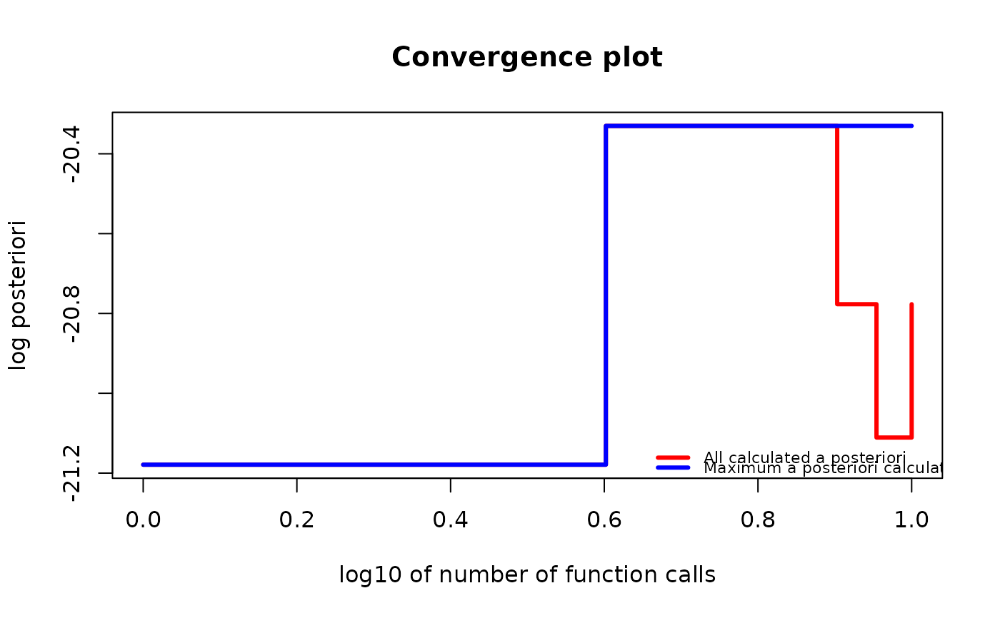

Use one of the optimization algorithms to find the permutation that maximizes a posteriori probability based on observed data. Not all optimization algorithms will always find the MAP, but they try to find a significant value. More information can be found in the "Possible algorithms to use as optimizers" section below.
Usage
find_MAP(
g,
max_iter = NA,
optimizer = NA,
show_progress_bar = TRUE,
save_all_perms = FALSE,
return_probabilities = FALSE
)Arguments
- g
Object of a
gipsclass- max_iter
Number of iterations for an algorithm to perform. At least 2. For
optimizer="MH"it has to be finite; foroptimizer="HC"it can be infinite; foroptimizer="BF"it is not used.- optimizer
The optimizer for the search of the maximum posteriori.
"MH"(the default for unoptimizedg) - Metropolis-Hastings"HC"- Hill Climbing"BF"- Brute Force"continue"(the default for optimizedg) - The same as thegwas optimized by (see Examples).
For more details, see the "Possible algorithms to use as optimizers" section below.
- show_progress_bar
A boolean. Indicate whether or not to show the progress bar.
When
max_iteris infinite,show_progress_barhas to beFALSE.When
return_probabilities=TRUE, then shows an additional progress bar for the time when the probabilities are calculated
- save_all_perms
A boolean.
TRUEindicates to save a list of all permutations that were visited during optimization. This can be useful, but need a lot more RAM.- return_probabilities
A boolean.
TRUEcan only be provided whensave_all_permsisTRUEand for:optimizer="MH"- use Metropolis-Hastings results to estimate posterior probabilitiesoptimizer="BF"- use brute force results to calculate exact posterior probabilities
This additional calculations are costly, so second progress bar is shown (when
show_progress_barisTRUE).To examine probabilities after optimization, call
get_probabilities_from_gips().
Details
find_MAP can produce a warning when:
the optimizer "hill_climbing" gets to the end of its
max_iterwithout converging.the optimizer will find the permutation with smaller
n0thannumber_of_observations(for more information on what it means, see \(C\sigma\) andn0section invignette("Theory", package = "gips")or in its pkgdown page.
Possible algorithms to use as optimizers
For a more in-depth explanations, see
vignette("Optimizers", package = "gips") or in its
pkgdown page.
For every algorithm, there are some aliases available.
"Metropolis_Hastings","MH"- use the Metropolis-Hastings algorithm; see Wikipedia. The algorithm will draw a random transposition in every iteration and consider changing the current state (permutation). When themax_iteris reached, the algorithm will return the best permutation calculated so far as the MAP Estimator. This implements the Second approach from references, section 4.1.2. This algorithm used in this context is a special case of the Simulated Annealing the reader may be more familiar with; see Wikipedia."hill_climbing","HC"- use the hill climbing algorithm; see Wikipedia. The algorithm will check all transpositions in every iteration and go to the one with the biggest a posteriori value. The optimization ends when all neighbors will have a smaller a posteriori value. If themax_iteris reached before the end, then the warning is shown, and it is recommended to start the optimization again on the output of thefind_MAP(). Remember that there arep*(p-1)/2transpositions to be checked in every iteration. For biggerp, this may be costly."brute_force","BF","full"- use the Brute Force algorithm that checks the whole permutation space of a given size. This algorithm will definitely find the actual Maximum A Posteriori Estimation but is very computationally expensive for bigger spaces. It is only recommended forp <= 8.
References
Piotr Graczyk, Hideyuki Ishi, Bartosz Kołodziejek, Hélène Massam. "Model selection in the space of Gaussian models invariant by symmetry." The Annals of Statistics, 50(3) 1747-1774 June 2022. arXiv link; doi:10.1214/22-AOS2174
See also
gips()- The constructor of agipsclass. Thegipsobject is used as thegparameter.plot.gips()- Practical plotting function for visualizing the optimization process.summary.gips()- Summarize the output of optimization.AIC.gips(),BIC.gips()- Get the Information Criterion of the found model.get_probabilities_from_gips()- Whenfind_MAP(return_probabilities = TRUE)was called, then those probabilities can be extracted with this function.log_posteriori_of_gips()- The function that the optimizers offind_MAP()tries to find the argmax of.forget_perms()- When thegipsobject was optimized withfind_MAP(save_all_perms = TRUE), it will be of considerable size in RAM.forget_permscan make such an object lighter in memory by forgetting the permutations that it was in.vignette("Optimizers", package = "gips")or its pkgdown page - A place to learn more about the available optimizers.vignette("Theory", package = "gips")or its pkgdown page - A place to learn more about the math behind thegipspackage.
Examples
require("MASS") # for mvrnorm()
perm_size <- 5
mu <- runif(perm_size, -10, 10) # Assume we don't know the mean
sigma_matrix <- matrix(
data = c(
1.0, 0.8, 0.6, 0.6, 0.8,
0.8, 1.0, 0.8, 0.6, 0.6,
0.6, 0.8, 1.0, 0.8, 0.6,
0.6, 0.6, 0.8, 1.0, 0.8,
0.8, 0.6, 0.6, 0.8, 1.0
),
nrow = perm_size, byrow = TRUE
) # sigma_matrix is a matrix invariant under permutation (1,2,3,4,5)
number_of_observations <- 13
Z <- MASS::mvrnorm(number_of_observations, mu = mu, Sigma = sigma_matrix)
S <- cov(Z) # Assume we have to estimate the mean
g <- gips(S, number_of_observations)
g_map <- find_MAP(g, max_iter = 5, show_progress_bar = FALSE, optimizer = "Metropolis_Hastings")
g_map
#> The permutation (1,4)(2,5,3):
#> - was found after 5 posteriori calculations;
#> - is 7.286 times more likely than the () permutation.
g_map2 <- find_MAP(g_map, max_iter = 5, show_progress_bar = FALSE, optimizer = "continue")
if (require("graphics")) {
plot(g_map2, type = "both", logarithmic_x = TRUE)
}

g_map_BF <- find_MAP(g, show_progress_bar = FALSE, optimizer = "brute_force")
summary(g_map_BF)
#> The optimized `gips` object.
#>
#> Permutation:
#> (1,3,5,2,4)
#>
#> Log_posteriori:
#> -15.58468
#>
#> Times more likely than starting permutation:
#> 1079.493
#>
#> Number of observations:
#> 13
#>
#> The mean in `S` matrix was estimated.
#> Therefore, one degree of freedom was lost.
#> There is 12 degrees of freedom left.
#>
#> n0:
#> 2
#>
#> Number of observations is bigger than n0 for this permutaion,
#> so the gips model based on the found permutation does exist.
#>
#> Number of free parameters in the covariance matrix:
#> 3
#>
#> BIC:
#> 129.5435
#>
#> AIC:
#> 127.8486
#>
#> --------------------------------------------------------------------------------
#> Optimization algorithm:
#> brute_force
#>
#> Number of log_posteriori calls:
#> 120
#>
#> Optimization time:
#> 0.397424 secs